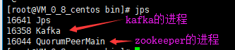

第一步：安装JDK
略。。。
第二步：上传并解压kafka安装包
略。。。
第三步：启动单机模式的zookeeper（这里的zookeeper建议不要使用kafka安装包自带的）
zookeeper的安装启动停止（单机模式）
第四步：启动单机模式的kafka
执行命令：bin/kafka-server-start.sh -daemon config/server.properties
第五步：使用jps命令查看进程是否存在

第六步：停止kafka
执行命令：./kafka-server-stop.sh
然后执行命令jps查看是否还有kafka进程存在